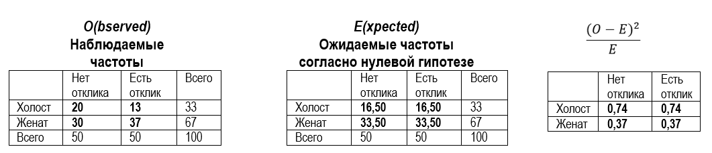
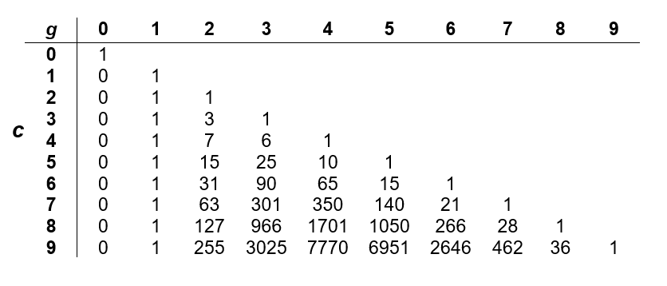
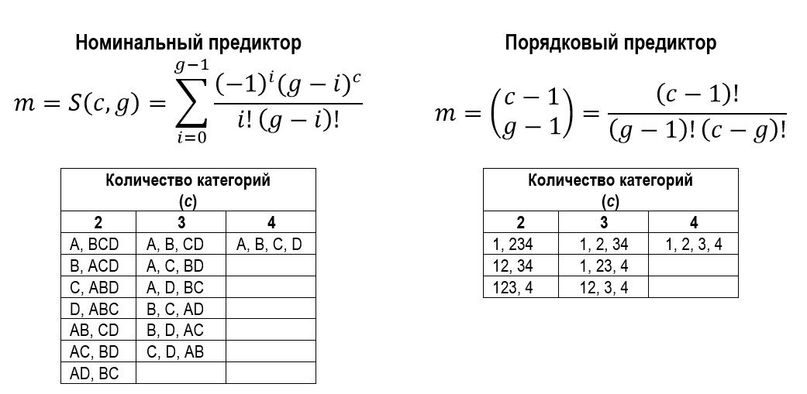
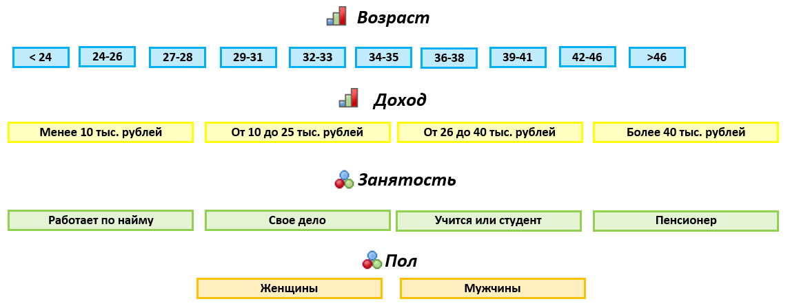
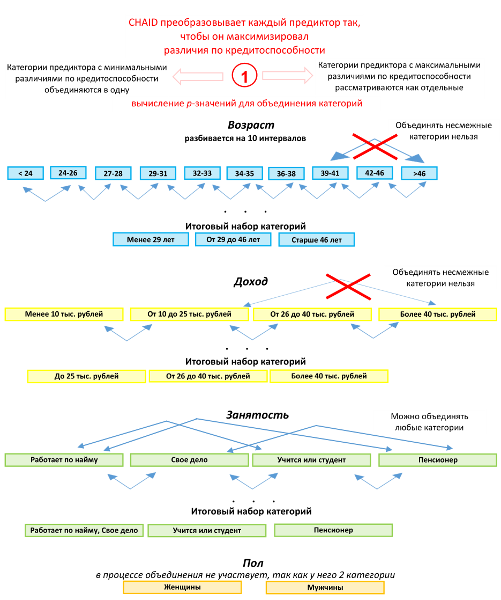
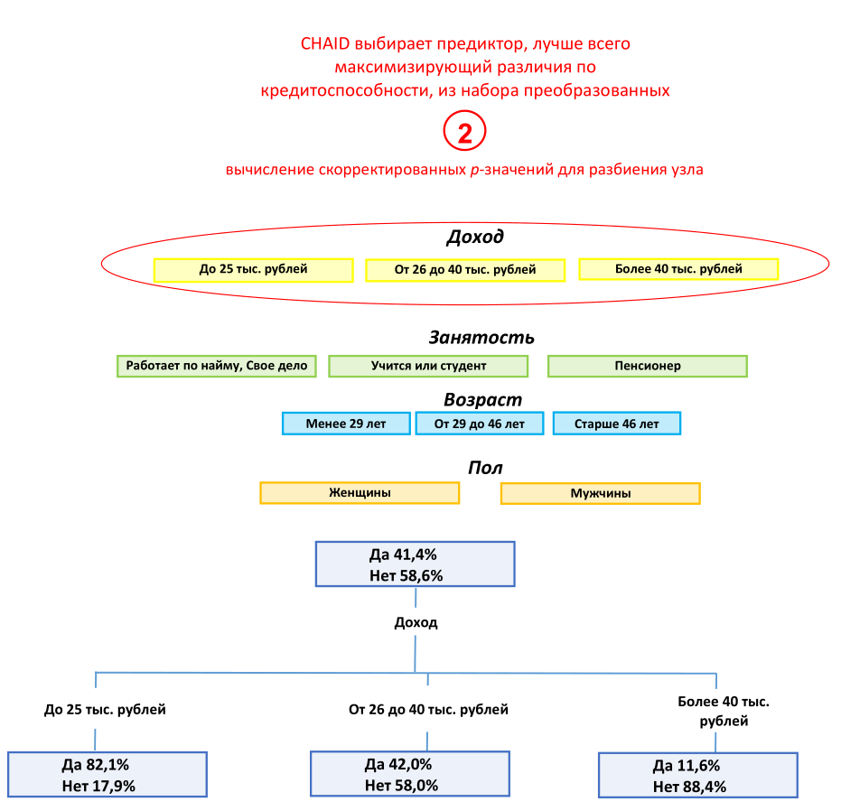
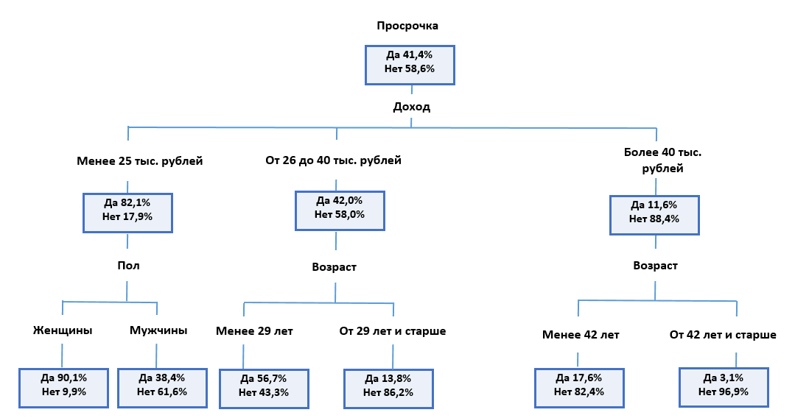

2 Построение деревьев решений CHAID с помощью пакета R CHAID
2.1 Знакомство с методом CHAID
2.1.1 Описание алгоритма
Перед началом работы алгоритма CHAID необходимо преобразовать все имеющиеся количественные предикторы в порядковые переменные. Обычно их разбивают на 10 категорий одинакового объема.
Алгоритм приступает к построению дерева, итеративно применяя к каждому узлу, начиная с корневого, процедуры объединения категорий, расщепления узла и проверки правил остановки.
Этап 1. Объединение категорий
1. Для каждого предиктора с числом категорий больше двух6 алгоритм ищет пару категорий с наименее значимыми различиями по зависимой переменной, т.е. пару категорий, для которых после применения соответствующего статистического критерия получено наибольшее p-значение. Выбор статистического критерия определяется типом шкалы зависимой переменной. Для номинальной зависимой переменной используется критерий хи-квадрат Пирсона. Алгоритм строит двухвходовую таблицу сопряженности с категориями предиктора в качестве строк и категориями зависимой переменной в качестве столбцов. Он проверяет нулевую гипотезу о том, что категории предиктора не отличаются друг от друга с точки зрения распределения категорий зависимой переменной. Для количественной зависимой переменной используется F-критерий. Алгоритм осуществляет однофакторный дисперсионный анализ и проверяет нулевую гипотезу о том, что средние значения зависимой переменной для различных категорий предиктора не различаются между собой.
ПРИМЕЧАНИЕ
Пакет R CHAID позволяет работать только с категориальной зависимой переменной. Возможность работы с количественной зависимой переменной реализована в процедуре Деревья классификации/CHAID проприетарного программного пакета IBM SPSS Statistics и питоновском пакете CHAID.
2. Найдя наибольшее p-значение для пары категорий, алгоритм сравнивает его с заданным уровнем значимости для объединения категорий.
Если p-значение:
меньше или равно заданному уровню значимости для объединения категорий – алгоритм переходит к вычислению скорректированных p-значений для полученного набора категорий (шаг 3);
больше уровня значимости для объединения категорий – эта пара объединяется в отдельную составную категорию, в результате формируется новый набор категорий предиктора и процесс начинается заново с поиска пары категорий с наибольшим p-значением.
ПРИМЕЧАНИЕ
В пакете R CHAID уровень значимости для объединения категорий можно задать c помощью параметра alpha2 вспомогательной функции chaid_control().
(Опциональный шаг) Если новая составная категория состоит из трех и более исходных категорий, алгоритм находит внутри этой составной категории наилучшее бинарное расщепление, которое дает наименьшее p-значение. Алгоритм выполняет бинарное расщепление, если его p-значение не превышает уровня значимости для разбиения объединенных категорий.
ПРИМЕЧАНИЕ
В пакете R CHAID уровень значимости для разбиения уже объединенных категорий можно настроить c помощью параметра alpha3 вспомогательной функции chaid_control().
3. Получив сформированный набор категорий предиктора, алгоритм для категориальной зависимой переменной вновь строит двухвходовую таблицу сопряженности с категориями предиктора в качестве строк и категориями зависимой переменной в качестве столбцов, а для количественной зависимой переменной вновь выполняет однофакторный дисперсионный анализ. В результате алгоритм вычисляет скорректированное p-значение критерия хи-квадрат или F-критерия как исходное p-значение, умноженное на поправку Бонферонни. Поправка Бонферрони представляет собой корректировку уровня значимости в зависимости от числа возможных способов, с помощью которых исходные категории предиктора могут быть объединены в итоговые категории.
Этап 2. Расщепление узла
После вычисления скорректированных p-значений для итоговых наборов категорий по всем предикторам алгоритм переходит к этапу расщепления узла.
1. На этапе расщепления алгоритм выбирает, какой предиктор обеспечит наилучшее разбиение узла. Для этого предиктор должен иметь наименьшее скорректированное p-значение (т.е. должен являться наиболее статистически значимым).
2. Найдя предиктор с наименьшим скорректированным p-значением, алгоритм сравнивает его с заданным уровнем значимости для расщепления.
Если p-значение:
меньше или равно заданному уровню значимости для расщепления – алгоритм разбивает узел с использованием данного предиктора;
больше заданного уровня значимости для расщепления, то алгоритм не расщепляет узел и узел рассматривается как терминальный.
ПРИМЕЧАНИЕ
В пакете R CHAID уровень значимости для расщепления узла можно настроить c помощью параметра alpha4 вспомогательной функции chaid_control().
Этап 3. Остановка
Алгоритм проверяет, нужно ли прекратить построение дерева, в соответствии со следующими правилами остановки:
Если узел стал однородным, то есть все наблюдения в узле имеют одинаковые значения зависимой переменной, узел не разбивается.
Если текущая глубина дерева достигает заданной пользователем максимальной глубины дерева, процесс построения дерева останавливается.
Если количество наблюдений в родительском узле меньше заданного пользователем минимума наблюдений в родительском узле, узел не разбивается.
Если минимальное абсолютное количество наблюдений в терминальном узле меньше заданного пользователем минимума наблюдений в терминальном узле, узел не разбивается.
Если минимальная относительная частота наблюдений в терминальном узле меньше заданной пользователем минимальной относительной частоты наблюдений в терминальном узле, узел не разбивается.
ПРИМЕЧАНИЕ
В пакете R CHAID с помощью ряда параметров вспомогательной функции chaid_control() можно изменить некоторые вышеперечисленные правила остановки:
minsplitзадает минимальное количество наблюдений в родительском узле перед расщеплением, по умолчанию 20;minbucketзадает минимальное абсолютное количество наблюдений в терминальном узле, по умолчанию 7;minprobзадает минимальную относительную частоту наблюдений в терминальном узле, по умолчанию 0.01;maxheightзадает максимальную высоту или глубину дерева (количество уровней дерева, лежащих ниже корневого узла), по умолчанию равен -1, т.е. ограничение отсутствует.
2.1.2 Немного о критерии хи-квадрат
Предположим, на этапе объединения алгоритм проверяет, различаются ли значимо две категории предиктора Семейное положение “Холост” и “Женат” по зависимой переменной Отклик. Нулевая гипотеза звучит так: категории предиктора не отличаются друг от друга с точки зрения распределения категорий зависимой переменной. Альтернативная гипотеза заключается в том, что категории предиктора все же отличаются друг от друга по зависимой переменной. Строится двухвходовая таблица сопряженности, где строки являются категориями предиктора Семейное положение, а столбцы – категориями зависимой переменной Отклик. Для каждой ячейки таблицы фиксируем наблюдаемую частоту. Затем для каждой ячейки фиксируем ожидаемую частоту согласно нулевой гипотезе. В итоге для каждой ячейки вычисляем квадрат разности между наблюдаемой и ожидаемой частотой, поделенный на ожидаемую частоту. Складываем результаты, вычисленные по каждой ячейке, и получаем значение хи-квадрат (\(\chi^{2}\)). Процесс вычисления хи-квадрат проиллюстрирован на рис. 2.1.

Рис. 2.1. Процесс вычисления значения хи-квадрат
\[\chi^{2}=\sum\frac{(O-E)^2}{E},\] где
\(O\) – наблюдаемые частоты;
\(E\) – ожидаемые частоты.
\[\chi^{2}=\frac{(20-16,5)^2}{16,5} + \frac{(13-16,5)^2}{16,5} + \frac{(30-33,5)^2}{33,5} + \frac{(37-33,5)^2}{33,5}=2,216\] Статистика хи-квадрат подчиняется распределению хи-квадрат со степенями свободы \(df=(R–1)(C–1)\), где \(R\) и \(C\) – количество строк и столбцов в таблице сопряженности. В нашем случае количество степеней свободы будет равно \(df=(2–1)(2–1)=1\).
Чтобы выяснить, достаточно ли велико полученное значение хи-квадрат для отклонения нулевой гипотезы, вычисляем соответствующую ему p-значение. p-значение – это вероятность ошибки, заключающейся в отклонении нулевой гипотезы, когда она верна. Это вероятность того, что случайная величина, имеющая распределение хи-квадрат при условии верности нулевой гипотезы, примет значение, не меньшее, чем вычисленное значение хи-квадрат. Решение об отклонении нулевой гипотезы принимается в результате сравнения p-значения с определенным пороговым уровнем, который называют уровнем значимости (\(\alpha\)). Обычно p-значение сравнивают с общепринятым стандартным уровнем значимости\(\alpha=0,05\). Если найденное p-значение меньше уровня значимости, нулевую гипотезу отклоняют, в противном случае у нас нет оснований отвергнуть нулевую гипотезу.
В нашем случае значение хи-квадрат 2,216 с одной степенью свободы соответствует р-значению 0,1366. Таким образом, вероятность того, что статистика хи-квадрат примет вычисленное значение 2,216 и выше, когда категории предиктора Семейное положение не отличаются друг от друга с точки зрения распределения категорий зависимой переменной Отклик, составляет 0,1366. Это превышает уровень значимости 0,05. У нас нет оснований отвергнуть нулевую гипотезу. Можно сделать вывод, что категории переменной Семейное положение действительно не отличаются друг от друга с точки зрения распределения неоткликнувшихся и откликнувшихся клиентов. Данные категории предиктора можно объединить.
Обратите внимание, фраза «нет оснований отклонить нулевую гипотезу» не тождественна фразе «принять нулевую гипотезу», которая является неверной. Нулевая гипотеза обычно имеет очень конкретную формулировку. Например, она может звучит так: нет разницы между средним значением выборки №1 и выборки №2. Если мы не можем отклонить нулевую гипотезу, значит ли это, что данные значения равны? Вовсе не обязательно. То, что нам не удалось найти статистически значимой разницы, совершенно не означает, что мы доказали равенство двух величин. Кроме того, результаты применения статистических критериев зависят от величины различий и от размера выборки, и одинаковые различия на выборках разного размера могут оказаться в одном случае незначимыми (например, если есть две выборки по 20 наблюдений), а в другом (когда наблюдений будет по 1000) – значимыми на том же уровне значимости. Таким образом, мощность статистического критерия (способность выявлять различия там, где они есть) зависит от объема выборки.
Важным практическим моментом в построении деревьев по методу CHAID является то, что по мере роста дерева в узлах остается все меньше и меньше наблюдений, и на определенном этапе мы теряем возможность провести очередное разделение просто в силу малого числа наблюдений в узле. Даже если такое деление могло бы улучшить качество модели на обучающей выборке, оно не будет произведено, если мы не сможем отклонить нулевую гипотезу на заданном уровне значимости; использование поправки Бонферрони только усугубляет эту ситуацию (см. ниже). Но это нельзя однозначно рассматривать как недостаток метода, поскольку описанная особенность является своего рода встроенной регуляризацией, которая может повысить обобщающую способность модели.
2.1.3 Немного об F-критерии
Предположим, на этапе объединения категорий алгоритм проверяет, различаются ли значимо категории предиктора Семейное положение “Холост” и “Женат” по количественной зависимой переменной Доход. Нулевая гипотеза будет звучат так: средние значения зависимой переменной в категориях предиктора или группах одинаковы. Чтобы проверить ее, нужно ответить на два вопроса: насколько сильно значения отклоняются от среднего значения зависимой переменной в группах и насколько сильно средние значения зависимой переменной в группах отличаются от среднего значения зависимой переменной перед разбиением на группы. Соответственно выполняется однофакторный дисперсионный анализ, в ходе которого подсчитывают внутригрупповую сумму квадратов отклонений и межгрупповую сумму квадратов отклонений и вычисляют F-критерий (критерий Фишера).
Сумма квадратов между группами (дочерними узлами) определяется по формуле:
Предположим, на этапе объединения категорий алгоритм проверяет, различаются ли значимо категории предиктора Семейное положение Холост и Женат по количественной зависимой переменной Доход. Нулевая гипотеза будет звучат так: средние значения зависимой переменной в категориях предиктора или группах одинаковы. Чтобы проверить ее, нужно ответить на два вопроса: насколько сильно значения отклоняются от среднего значения зависимой переменной в группах и насколько сильно средние значения зависимой переменной в группах отличаются от среднего значения зависимой переменной перед разбиением на группы. Соответственно выполняется однофакторный дисперсионный анализ, в ходе которого подсчитывают внутригрупповую сумму квадратов отклонений и межгрупповую сумму квадратов отклонений и вычисляют F-критерий (критерий Фишера). Сумма квадратов между группами (дочерними узлами) определяется по формуле:
\[SS_{межгрупп}=\sum^{B}_{i=1}n_i(\bar{y}_{i.}-\bar{y}_{..})^2,\]
где
\(\bar{y}_{i.}\) – среднее значение зависимой переменной в \(i\)-том дочернем узле;
\(\bar{y}_{..}\) – среднее значение зависимой переменной в родительском узле.
Сумма квадратов внутри групп (дочерних узлов) определяется по формуле:
\[SS_{внутригрупп}=\sum^{B}_{i=1}\sum^{n_i}_{j=1}n_i(y_{ij}-\bar{y}_{i.})^2,\]
где
\(y_{ij}\) – значение зависимой переменной для \(j\)-ого наблюдения в \(i\)-том дочернем узле;
\(\bar{y}_{i.}\) – среднее значение зависимой переменной в \(i\)-том дочернем узле.
Общая сумма квадратов отклонений имеет вид
\[SS_{общая}=\sum^{B}_{i=1}\sum^{n_i}_{j=1}n_i(y_{ij}-\bar{y}_{..})^2\]
F-критерий – это отношение межгрупповой суммы квадратов отклонений к внутригрупповой:
\[F=frac_{S_{межгрупп}}{S_{внутригрупп}} \sim F(B-1, n-B)\]
Эта статистика подчиняется F-распределению с \(B – 1\) и \(n – B\) степенями свободы согласно нулевой гипотезе.
p-значение – это вероятность того, что случайная величина с распределением Фишера при условии верности нулевой гипотезы примет значение, не меньшее, чем фактическое значение статистики. Допустим, для нашего примера мы получили значение F-теста 15,943, соответствующее р-значению 0,000. Вероятность того, что F-статистика примет фактическое значение 15,943 и выше, когда средние значения зависимой переменной в категориях предиктора одинаковы, составляет <0,001. Это меньше уровня значимости 0,05. Мы можем отклонить нулевую гипотезу и сделать вывод, что средние значения зависимой переменной в категориях предиктора неодинаковы, а межгрупповые различия являются более существенными, чем внутригрупповые. Данные категории предиктора объединять нельзя.
2.1.4 Способы объединения категорий предикторов
Способ объединения категорий предиктора зависит от шкалы его измерения. В номинальных предикторах можно объединять любые категории, если они не различаются значимо по зависимой переменной. Таким образом, для номинальных переменных ограничения на объединение категорий не накладываются.
В порядковых предикторах две категории могут быть объединены, только если к ним могут быть присоединены промежуточные категории. Например, переменная, представляющая группы по уровню доходов, может рассматриваться как порядковая. Людей с доходом менее 2000$ имеет смысл объединять с теми, кто зарабатывает более 3000$, только если к вновь образовавшейся группе можно также отнести людей с доходом от 2000$ до 3000$.
2.1.5 Поправка Бонферрони
Осуществляя поиск незначимых категорий предиктора для объединения, CHAID выполняет большое количество статистических тестов для различных комбинаций категорий предиктора. Однако число таких комбинаций зависит от количества категорий, которое у каждой переменной разное.
Осуществляя поиск незначимых категорий предиктора для объединения, CHAID выполняет большое количество статистических тестов для различных комбинаций категорий предиктора. Однако число таких комбинаций зависит от количества категорий, которое у каждой переменной разное. Например, по одной переменной может оцениваться 2 варианта объединения, рассматриваться 2 таблицы сопряженности и выполняться 2 статистических теста, а по другой переменной – 6 вариантов объединения, 6 таблиц сопряженности и 6 статистических тестов. Вероятность того, что из 6 тестов хи-квадрат для второй переменной по крайней мере один из тестов дает ложное отклонение нулевой гипотезы составляет \(1-\prod^{6}_{i=1}(1-\alpha_i)\).
Групповая вероятность ошибки намного больше индивидуальной вероятности ошибки \(\alpha_i\). Например, если индивидуальная вероятность ошибки (\(\alpha_i\)) по каждому тесту равна 0,05, то групповая вероятность ошибки составит \(1–0,956 = 0,265\). Таким образом, при осуществлении множественных проверок гипотез при помощи критерия хи-квадрат (одна проверка на каждое возможное объединение), р-значения недооценивают риск отклонения нулевой гипотезы, когда она верна. Эти рассуждения справедливы и для других статистических критериев. Например, вы можете сделать ошибочный вывод, что заемщики с разными профессиями отличаются по кредитоспособности, тогда как они на самом деле не отличаются.
Если мы хотим, чтобы групповая вероятность ошибки при этом не превышала определенный уровень значимости \(\alpha\) (например, 0,05), то, согласно методу Бонферрони, мы должны умножить каждое полученное p-значение на \(m\) – количество возможных вариантов объединения с исходных категорий предиктора в \(g\) итоговых категорий, получить скорректированное p-значение и сравнить его с уровнем значимости \(\alpha\). Для номинального предиктора множитель \(m\) определяется числом Стирлинга второго рода:
\[m=S(c, g) = \sum^{g-1}_{i=1}\frac{(-1)^i(g-i)^c}{i!(g-i)!}\]
На рис. 2.2 приводится таблица значений чисел Стирлинга при \(0≤c\), \(g≤9\).

Риc. 2.2. Таблица значений чисел Стерлинга при \(0≤c\), \(g≤9\)
Для порядкового предиктора множитель \(m\) определяется как
\[m=\begin{pmatrix}c-1 \\g-1\end{pmatrix}=\frac{(c-1)!}{(g-1)!(c-g)!}\] Допустим, у нас есть три предиктора. Первый – номинальный предиктор Сlass с 8 категориями. Второй – номинальный предиктор Type с 5 категориями. Третий – порядковый предиктор Incomecat c 4 категориями. По завершении этапа объединения Сlass был преобразован в предиктор с тремя итоговыми категориями, и для него было вычислено p-значение 0,00001; Type был преобразован в предиктор с двумя итоговыми категориями, и для него было вычислено p-значение 0,009; Incomecat был преобразован в предиктор с тремя итоговыми категориями и получил p-значение 0,003. Множитель для предиктора Class равен \(m=S(8, 3)=\frac{1}{6}(3^8-3\times2^8+3)=966\). Таким образом, наше p-значение 0,00001 умножается на 966, и мы получаем скорректированное p-значение 0,00966. Множитель для предиктора Type равен \(m=S(5, 2)=2^4-1=15\). Наше p-значение 0,009 умножается на 15, и мы получаем скорректированное p-значение 0,135. Множитель для предиктора Incomecat равен \(m=\frac{(4-1)!}{(3-1)!(4-3)!}=\frac{3!}{2!\times1!}=\frac{6}{2}=3\). p-значение 0,003 умножается на 3, и мы получаем скорректированное p-значение 0,009. Для разбиения узла выбирается предиктор Incomecat, который имеет наименьшее скорректированное p-значение 0,009.

Риc. 2.3. Количество возможных разбиений переменной из 4 категорий на 2, 3, 4 группы
2.1.6 XCHAID
В 1991 году Дэвид Биггс, Барри Де Вилль и Эд Суен предложили модификацию метода CHAID – XCHAID (от Exhaustive CHAID – исчерпывающий CHAID). Он был разработан для устранения недостатка CHAID – ограниченного набора расщеплений для предиктора.
Алгоритм XCHAID приступает к построению дерева, итеративно применяя к каждому узлу, начиная с корневого, процедуры объединения категорий, расщепления узла и проверки правил остановки. Этапы расщепления и остановки в XCHAID аналогичны этапам расщепления и остановки в CHAID. Однако на этапе объединения категорий используется процедура более тщательного поиска категорий: пары категорий продолжают сравниваться и объединяться до тех пор, пока не останется одна пара категорий (напомним, что обычный CHAID прекращает объединение категорий, когда обнаруживает, что все оставшиеся категории статистически значимо различаются между собой). Таким образом, XCHAID позволяет найти наилучшее расщепление для каждого предиктора и затем выбрать, какой предиктор нужно расщепить. Вместе с тем, поскольку объединение категорий осуществляется более тщательно, чем в методе CHAID, XCHAID требует большего времени вычислений.
Объединение категорий
Для каждого предиктора с числом категорий больше двух алгоритм ищет пару категорий с наименее значимыми различиями по зависимой переменной. Для категориальной зависимой переменной используется критерий хи-квадрат Пирсона. Для количественной зависимой переменной может использоваться F-критерий.
Найдя пару с наибольшим p-значением, алгоритм объединяет ее в отдельную составную категорию.
Для нового набора категорий предиктора алгоритм вычисляет p-значение. Алгоритм запоминает p-значение и соответствующий набор категорий.
Алгоритм повторяет шаги 1, 2, 3 до тех пор, пока не останутся две категории. Затем среди всех наборов категорий предиктора алгоритм находит набор, у которого p-значение на шаге 3 является наименьшим.
Алгоритм вычисляет скорректированное p-значение для выбранного набора категорий.
Расщепление узла
После вычисления скорректированных p-значений для итоговых наборов категорий по всем предикторам алгоритм переходит к этапу расщепления узла.
На этапе расщепления алгоритм выбирает, какой предиктор обеспечит наилучшее разбиение узла, то есть имеет наименьшее скорректированное p-значение (наиболее статистически значимый).
Найдя предиктор с наименьшим скорректированным p-значением, алгоритм сравнивает его с заданным уровнем значимости для расщепления.
Если p-значение:
меньше или равно заданному уровню значимости для расщепления – алгоритм разбивает узел с использованием данного предиктора;
больше заданного уровня значимости для расщепления, то алгоритм не расщепляет узел и узел рассматривается как терминальный.
Остановка
Алгоритм проверяет, нужно ли прекратить построение дерева, в соответствии со следующими правилами остановки.
Если узел стал однородным, то есть все наблюдения в узле имеют одинаковые значения зависимой переменной, узел не разбивается.
Если текущая глубина дерева достигает заданной пользователем максимальной глубины дерева, процесс построения дерева останавливается.
Если количество наблюдений в родительском узле меньше заданного пользователем минимума наблюдений в родительском узле, узел не разбивается.
Если минимальное абсолютное количество наблюдений в терминальном узле меньше заданного пользователем минимума наблюдений в терминальном узле, узел не разбивается.
Если минимальная относительная частота наблюдений в терминальном узле меньше заданной пользователем минимальной относительной частоты наблюдений в терминальном узле, узел не разбивается.
На практике метод XCHAID строит модель с одинаковой или чуть лучшей дискриминирующей способностью, чем метод CHAID, однако эта разница, как правило, не является статистически значимой. Если учесть, что при одинаковом качестве моделей времени на подгонку в случае использования метода XCHAID требуется больше (особенно это актуально при работе с большими выборками), данный метод используется редко.
2.1.7 Иллюстрация работы CHAID на конкретном примере
Предположим, есть данные по клиентам микрофинансовой организации и известно, выплатили они займ или нет (категориальная зависимая переменная Просрочка). В качестве потенциальных предикторов фигурируют четыре переменных: Доход, Возраст, Сфера занятости, Пол. Переменные Пол и Сфера занятости являются номинальными, переменные Доход и Возраст – порядковыми. Переменная Сфера занятости принимает значения “Работает по найму”, “Свое дело”, “Учится или студент”, “Пенсионер”. Переменная Доход принимает значения “Менее 10 тыс. рублей”, “От 10 до 25 тыс. рублей”, “От 26 до 40 тыс. рублей”, “Более 40 тыс. рублей”. Переменная Пол принимает значения “Женщина” и Мужчина. Переменная Возраст принимает значения “<24”, “24-26”, “27-28”, “29-31”, “32-33”, “34-35”, “36-38”, “39-41”, “42-46” и “>46”. Необходимо выяснить, какие группы клиентов с большей вероятностью выйдут в просрочку, чтобы сосредоточить внимание на них. Схематично наши исходные данные представлены на рис. 2.4.

Риc. 2.4. Исходные данные перед началом работы CHAID
Что же делает CHAID, когда мы запускаем его? По каждому предиктору CHAID берет пару категорий, сравнивает, различаются ли они по зависимой переменной, и объединяет их, если они не показывают этого различия (дают p-значение больше заданного уровня значимости для объединения).
В нашем случае по порядковому предиктору Доход CHAID сравнивает категорию “Менее 10 тыс. рублей” с категорией “От 10 до 25 тыс. рублей”, затем категорию “От 10 до 25 тыс. рублей” с категорией “От 26 до 40 тыс. рублей”, затем категорию “От 26 до 40 тыс. рублей” с категорией "Более 40 тыс. рублей“. Еще раз обратите внимание, что в порядковом предикторе несмежные категории (например, категория ”Менее 10 тыс. рублей" и категория “Более 40 тыс. рублей”) сравниваться и объединяться не могут. Допустим, категории предиктора Доход “Менее 10 тыс. рублей” и “От 10 до 25 тыс. рублей” значимо не различаются по кредитоспособности (в обоих категориях наблюдается высокая доля «плохих» заемщиков), имеют наибольшее p-значение. Тогда CHAID объединяет их и формирует новый набор категорий (объединенная категория “Менее 10 тыс. рублей/От 10 до 25 тыс. рублей”, категория “От 26 до 40 тыс. рублей”, категория “Более 40 тыс. рублей”) и снова начинает процесс сравнения. Процесс объединения категорий остановится, когда все оставшиеся категории предиктора будут различаться на заданном уровне значимости для объединения. Сформировав новый набор категорий по предиктору Доход, алгоритм начинает аналогичным образом формировать набор категорий для порядкового предиктора Возраст, опять же сравнивая и объединяя только смежные категории. Затем алгоритм формирует набор категорий для номинального предиктора Сфера занятости. Здесь уже CHAID может сравнивать и объединять любые категории переменной. Затем переходит к предиктору Пол. Здесь категории предиктора Пол не могут быть объединены, поскольку у этой переменной только два уровня. Процесс сравнения и объединения категорий по каждому предиктору показан на рис. 2.5.

Риc. 2.5. Объединение категорий предикторов
В итоге получаем преобразованные предикторы Доход (допустим, набор из 3 категорий: объединенная категория “Менее 10 тыс. рублей/От 10 до 25 тыс. рублей”, категория “От 26 до 40 тыс. рублей”, категория “Более 40 тыс. рублей”), Сфера занятости (набор из 3 категорий: объединенная категория “Работает по найму/Свое дело”, категория “Учится или студент”, категория “Пенсионер”), Возраст (набор из 3 категорий: объединенная категория “Менее 29 лет”, объединенная категория “От 29 до 46 лет”, категория “Старше 46 лет”) и предиктор Пол (категория “Женщины” и категория “Мужчины”).
Завершив этап объединения, CHAID переходит к этапу разбиения узла (рис. 2.6). Здесь происходит вычисление p-значений для итоговых наборов категорий, затем p-значения корректируются с помощью поправки Бонферрони, чтобы учесть количество сравнений категорий по каждому предиктору.

Риc. 2.6. Выбор предиктора для разбиения узла
Например, лучшим предиктором объявлена переменная Доход (имеет наименьшее скорректированное p-значение, не превышающее заданный уровень значимости для разбиения узла). Тогда CHAID обращается к первой новой группе (например, объединенной категории “Менее 10 тыс. рублей/От 10 до 25 тыс. рублей”) и снова повторяет вышеописанные шаги, ищет наименее различающиеся категории для объединения и выбирает наиболее значимый предиктор для разбиения. Предположим, что для рассматриваемой группы таким предиктором стал Пол. Тогда CHAID разделяет группу “Менее 10 тыс. рублей/От 10 до 25 тыс. рублей” по переменной Пол. Затем он исследует каждую из оставшихся групп, образованную переменной Доход (категории “От 26 до 40 тыс. рублей”, “Более 40 тыс. рублей”), снова по каждой группе проверяет категории предикторов на объединение и разбивает узел с помощью предиктора, который наиболее значимо связан с зависимой переменной для этой группы. Затем CHAID опускается на следующий уровень дерева и берет первую группу предиктора Пол “Женщины” внутри группы “Менее 10 тыс. рублей/От 10 до 25 тыс. рублей”, снова исследует категории и выясняет, есть ли среди предикторов значимо влияющие на зависимую переменную. Если таких предикторов для группы “Женщины” внутри группы “Менее 10 тыс. рублей/От 10 до 25 тыс. рублей” не оказывается или выполняется условие остановки, то CHAID объявляет эту группу терминальным узлом и переходит к аналогичному исследованию группы “Мужчины” внутри группы “Менее 10 тыс. рублей/От 10 до 25 тыс. рублей”.
Таким способом, уровень за уровнем, CHAID систематически разделяет данные на группы (называемые узлами), показывающие значимые различия по отношению к зависимой переменной. Результаты этого процесса представляются в форме дерева, в котором ветвление происходит по мере деления на группы. Взглянув на построенное дерево (рис. 2.7), мы можем с уверенностью ответить на ряд вопросов. Какие из предикторов взаимосвязаны с переменной дефолта, помогают предсказать ее? Какие комбинации категорий этих предикторов дают наибольший процент попадания в интересующую категорию зависимой переменной? Они представляют собой целевые группы, на которых нужно сосредоточить внимание. В следующих разделах будет подробно рассказано, как строить и интерпретировать дерево решений CHAID в пакете R CHAID.

Риc. 2.7. Итоговое дерево CHAID
2.2 Предварительная подготовка данных перед построением модели дерева CHAID
2.2.1 Загрузка данных
Данные, которыми мы воспользуемся для построения дерева классификации CHAID, записаны в файле Churn.csv. Исходная выборка содержит записи о 4431 клиенте, классифицированном на два класса: 0 — оттока нет (2496 клиентов) и 1 — отток есть (1935 клиентов). По каждому наблюдению (клиенту) фиксируются следующие переменные (характеристики):
порядковый предиктор Длительность междугородних звонков в минутах [
longdist];порядковый предиктор Длительность местных звонков в минутах [
local];номинальный предиктор Наличие скидки на междугородние звонки [
int_disc];номинальный предиктор Тип местных звонков [
billtype];номинальный предиктор Способ оплаты [
pay];номинальный предиктор Пол [
gender];номинальный предиктор Семейное положение [
marital];количественный предиктор Доход [
income];порядковый предиктор Возрастная категория [
agecat];номинальная зависимая переменная Наличие оттока [
churn].
Необходимо разработать модель оттока, с помощью которой предполагается классифицировать новых клиентов на лояльных и склонных к уходу.
Запустим R. Для работы нам потребуются следующие пакеты:
dplyr;Hmisc;stringr;car;imputeMissings;lsr;CHAID;pROC;precrec;xlsx.
Давайте установим их с помощью функции install.packages(). Если вы используете консольную версию R, вам будет предложено выбрать постоянный CRAN-репозиторий, из которого будут устанавливаться пакеты.
install.packages("data.table")
install.packages("Hmisc")
install.packages("stringr")
install.packages("car")
install.packages("imputeMissings")
install.packages("lsr")
install.packages("CHAID", repos = "http://R-Forge.R-project.org")
install.packages("pROC")
install.packages("precrec")
install.packages("xlsx")Иногда при установке пакетов появляется ошибка: *dependencies название_пакета are not available for package название_ устанавливаемого _пакета*. Это говорит о том, что перед установкой основного пакета вы должны установить требуемые пакеты-зависимости.
После установки пакетов их можно загрузить для работы с помощью функции library():
## data.table 1.13.0 using 4 threads (see ?getDTthreads). Latest news: r-datatable.com## Loading required package: lattice## Loading required package: survival## Loading required package: Formula## Loading required package: ggplot2## Want to understand how all the pieces fit together? Read R for Data Science:
## https://r4ds.had.co.nz/##
## Attaching package: 'Hmisc'## The following objects are masked from 'package:base':
##
## format.pval, units## Loading required package: carData##
## Attaching package: 'imputeMissings'## The following object is masked from 'package:Hmisc':
##
## impute## Loading required package: partykit## Loading required package: grid## Loading required package: libcoin## Loading required package: mvtnorm## Type 'citation("pROC")' for a citation.##
## Attaching package: 'pROC'## The following objects are masked from 'package:stats':
##
## cov, smooth, var##
## Attaching package: 'precrec'## The following object is masked from 'package:pROC':
##
## aucПри помощи функции data.table::fread() загрузим файл Churn.csv в таблицу данных dt:
Если предиктор имеет одну категорию, он исключается из анализа. Если предиктор имеет две категории, происходит переход к шагу 3.↩︎